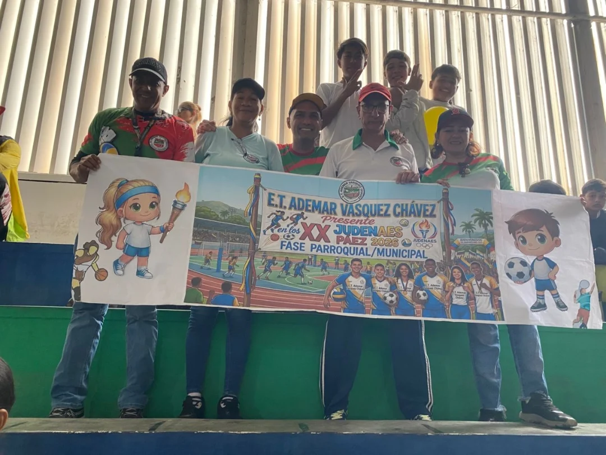
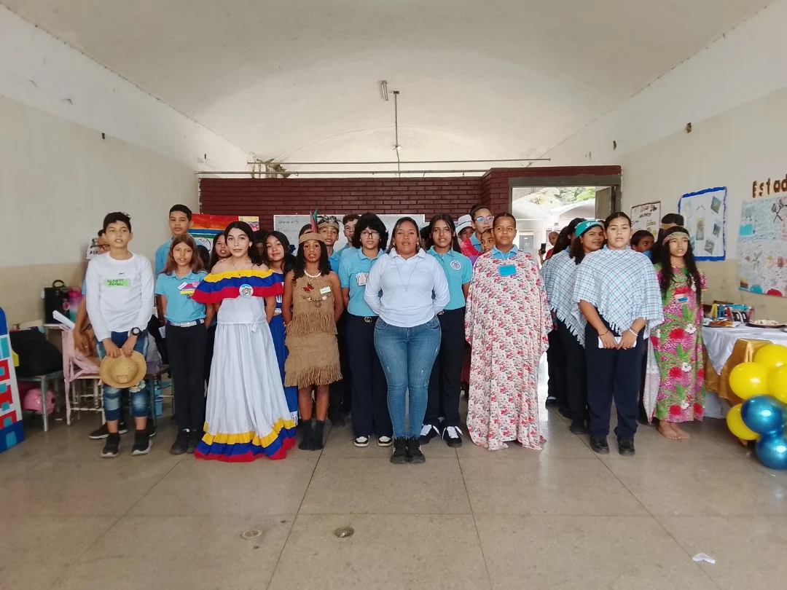
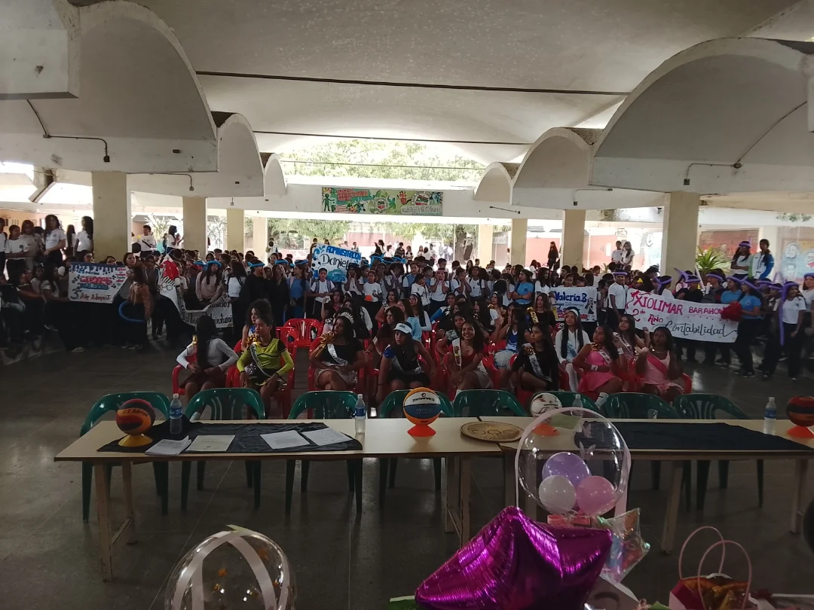
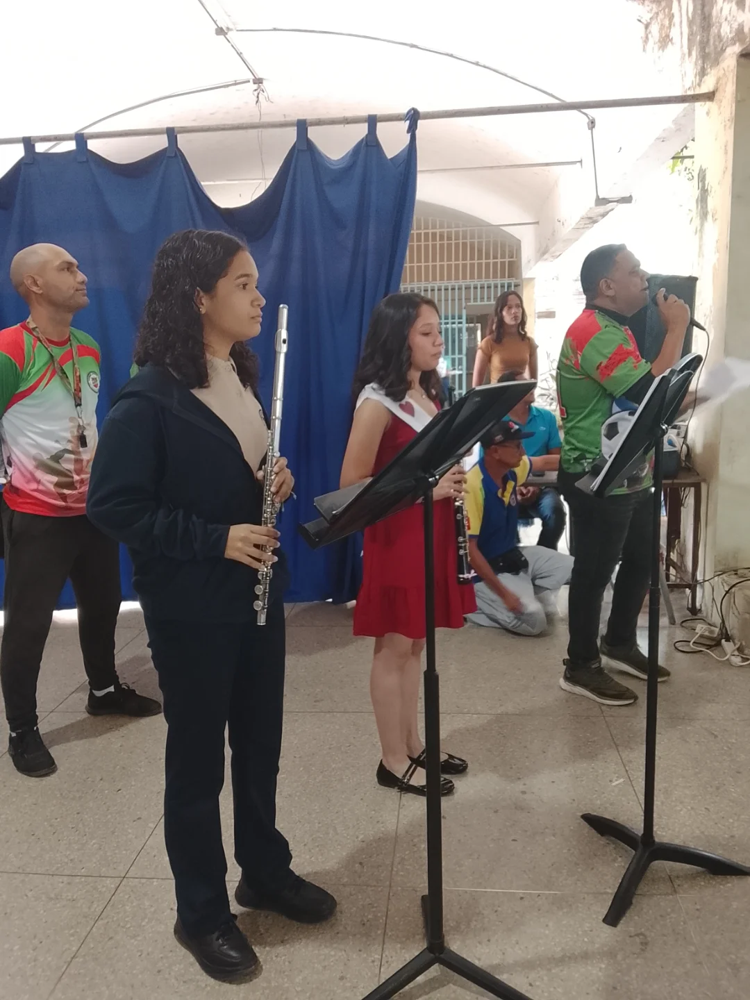
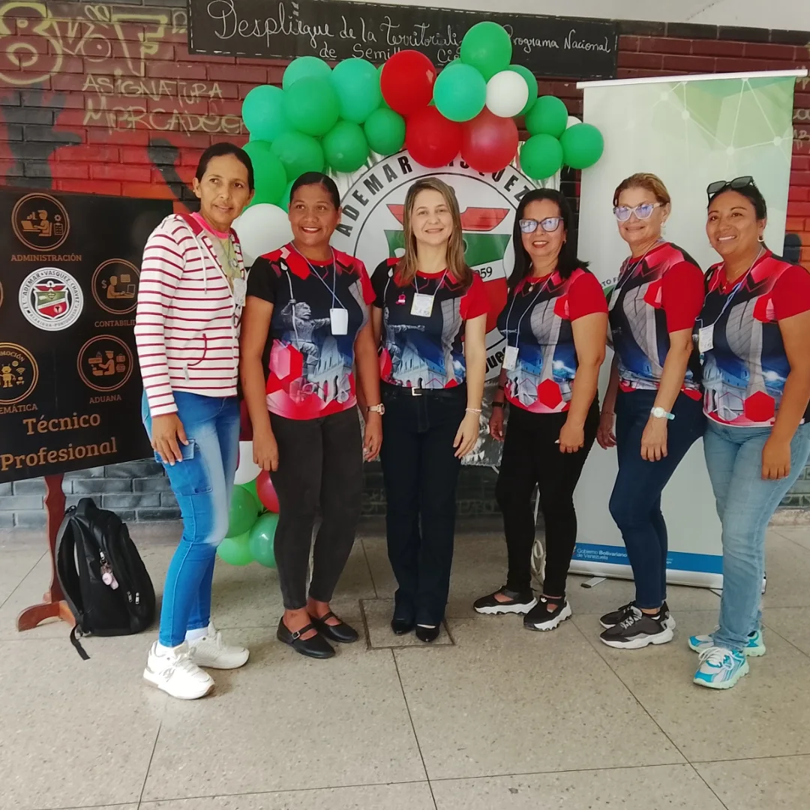

Telemática
Redes, informática y comunicaciones aplicadas.
Escuela Técnica
Desde Acarigua, estado Portuguesa, preparamos profesionales en cinco menciones técnicas, con la disciplina, el estudio y la orientación que representa nuestro escudo.

Formación técnica
Cinco especialidades, un mismo compromiso: egresar técnicos medios listos para el campo laboral.
Redes, informática y comunicaciones aplicadas.
Trámites, normativa y comercio exterior.
Gestión de destinos y servicios turísticos.
Planificación y gestión de organizaciones.
Registro y control de las finanzas.
Comunidad
Un vistazo a lo que ocurre dentro y fuera de las aulas.







Nuestro escudo
Visítanos